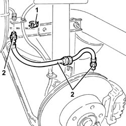

3330e30 FLEXIBLE PIPE (one), left or right, to rear brake calipers - R.R.
- Path
- Procedures > 33 BRAKING SYSTEM > 3330 HYDRAULIC BRAKING SYSTEM > 3330E hydraulic brake system pipes > 3330e30 FLEXIBLE PIPE (one), left or right, to rear brake calipers - R.R.
- Kind
- repair procedure (removal / refitting; the operation number is the code)
- Applies to
- all engines; all production periods
- Interactive page
- https://sloeber94.github.io/elrnDB-a156/en/#/3238084
Applies to: all engines; all production periods
 Removing
Removing
 Refitting
RefittingPosition the vehicle on the ramp.
4450B11 WHEEL (one) rear - R.R.
1. Remove the retaining plate.
2. Undo the connectors and remove the flexible pipe to the rear brake calipers after releasing it from the mounting bracket.

Applies to: all engines; all production periods
Refitting
RemovingFit the flexible pipe to the rear brake calipers, fixing it to the mounting bracket and tightening the connectors to the specified torque.
 | Fastening | Component | Ø | Value (daNm) |
|---|---|---|---|---|
- | Connector | HOSE TO FRONT BRAKE CALIPER | M10 | 1.3 - 1.5 |
Fit the retaining plate.
3330A14 HYDRAULIC BRAKING SYSTEM - Bleed air
4450B10 Front WHEEL (one) - R.R.
Remove the vehicle from the ramp.